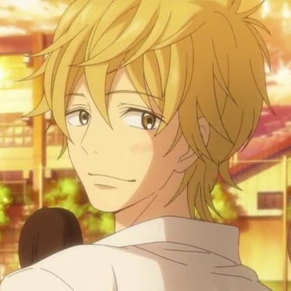

-
Sawako Kuronuma
Sawako é a protagonista de Kimini Todoke. Ela é uma jovem tímida, meiga e honesta, mas sofre com mal-entendidos devido à sua aparência, que lembra Sadako, um personagem de filme de terror. Apesar disso, Sawako tem um coração puro e deseja se conectar com os outros, trazendo felicidade ao seu redor. Ao longo da história, ela se esforça para superar sua timidez e criar laços verdadeiros com seus colegas, especialmente com Kazehaya, por quem ela desenvolve sentimentos profundos.
IDADE/ 17 BDAY/ 31/12 -
Shouta Kazehaya
Kazehaya é o protagonista masculino e colega de classe de Sawako. Ele é amigável, carismático e popular entre os colegas, conhecido por tratar todos com gentileza. Kazehaya é a primeira pessoa a perceber a verdadeira natureza de Sawako e encorajá-la a se abrir para o mundo. Ele é um jovem generoso e tem sentimentos românticos por Sawako, mas enfrenta dificuldades para expressá-los completamente.
IDADE/ 17 BDAY/ 15/05 -
Maru
Pedro Martinez, carinhosamente chamado de Maru, é o cachorro de Kazehaya. Ele é um Shiba Inu adorável, energético e amigável, assim como seu dono. Maru é muito leal a Kazehaya e tem uma relação especial com Sawako, que rapidamente conquista seu carinho. Ele aparece em momentos cômicos e fofos, sendo um elemento que aproxima ainda mais os personagens e reforça o clima acolhedor da história.
IDADE/ 3 BDAY/ ??? -
Ayane Yano
Ayane é uma das melhores amigas de Sawako. Madura, observadora e sofisticada, Ayane é conhecida por ser direta e confiável. Embora pareça ser segura de si, ela guarda inseguranças e questões emocionais mais profundas, que são exploradas ao longo da história. Sua amizade com Sawako a ajuda a se abrir e a enfrentar seus próprios desafios.
IDADE/ 17 BDAY/ 03/03 -
Chizuru Yoshida
Chizuru é outra grande amiga de Sawako. Ela é extrovertida, energética e muitas vezes age como a "irmã mais velha" do grupo. Apesar de sua personalidade forte e animada, Chizuru tem um lado sensível, especialmente em relação aos seus sentimentos por Ryu, seu amigo de infância. Sua lealdade à amizade e sua busca pela felicidade a tornam uma personagem muito querida.
IDADE/ 17 BDAY/ 01/06 -
Ryu Sanada
Ryu é amigo de infância de Chizuru e também um colega de Sawako. Ele é tranquilo, calado e muitas vezes difícil de ler, mas é extremamente leal aos seus amigos. Apesar de seu comportamento reservado, Ryu tem sentimentos por Chizuru e luta para encontrar maneiras de expressá-los sem comprometer sua amizade.
IDADE/ 17 BDAY/ 27/12 -
Ume Kurumizawa
Ume, conhecida como Kurumi, é inicialmente uma rival de Sawako. Bonita e popular, ela parece doce e amável, mas possui um lado manipulador, especialmente quando tenta conquistar Kazehaya. Contudo, ao longo da história, Kurumi demonstra crescimento pessoal, revelando uma faceta mais humana e compreensiva.
IDADE/ 17 BDAY/ 05/04 -
Kento Miura
Kento é introduzido mais tarde na história como um colega de classe de Sawako. Ele é confiante, brincalhão e às vezes um pouco intrometido, especialmente em relação ao relacionamento entre Sawako e Kazehaya. Embora pareça superficial no início, Kento mostra que tem boas intenções e ajuda Sawako a entender melhor seus próprios sentimentos.
IDADE/ 17 BDAY/ 07/08 -
Kazuichi Arai (Pin)

Pin é o professor responsável pela classe de Sawako e Kazehaya. Ele é engraçado, excêntrico e frequentemente faz comentários absurdos, mas tem um bom coração e se preocupa genuinamente com seus alunos. Apesar de seu comportamento despreocupado, Pin ocasionalmente demonstra sabedoria e age como um mentor para os personagens principais.
IDADE/ 27 BDAY/ 26/02